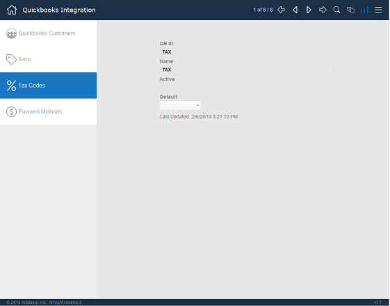
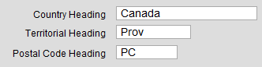
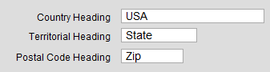
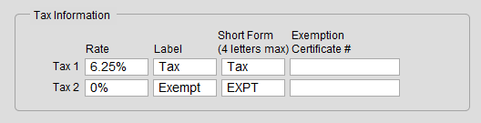
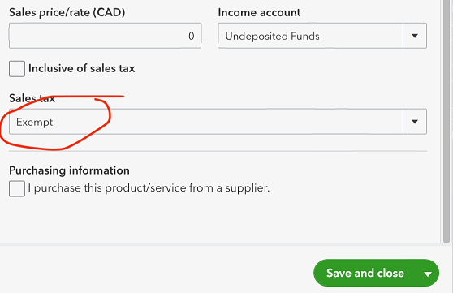

Set up the QuickBooks Tax Codes
Use these steps to setup your QuickBooks integration with FrameReady.
Before You Begin...
How to open the QuickBooks Tax Codes Set up Screen
-
Log in as level4 and Open the QuickBooks Settings.
-
Starting in February 2018, QuickBooks Online has the option to automate sales tax calculations.
If this feature is enabled, then set the Automatic Tax field to Yes. No further setup is required for Quickbooks Online.
If the Automatic Tax feature is disabled in your QuickBooks Online account, then continue to Step 3. -
Click the Gear icon (top right).

-
If not already highlighted, then click the Tax Codes button in the left sidebar.
-
The Tax Codes portion of the integration appears.

Note on Sales Tax in FrameReady vs QuickBooks
-
Sales tax can be the most complex part of the integration with FrameReady and QuickBooks. There are many options with sales tax and US versions of QuickBooks can have a very different set up than the Canadian version.
-
US QuickBooks Online versions have a new feature that automatically calculates sales tax based solely on the address on the invoice (customer address) and, if this feature is turned on, then it does not matter what the amount is in FrameReady, the QuickBooks amount will be used.
-
FrameReady is also set up with two sales tax rates (percentages) but QuickBooks does not exactly work this way. QuickBooks can be set up to have a sales tax group made up of multiple sales tax rates, but the rate on the invoice is always calculated at the combined rate.
-
Some customizations regarding sales tax may be required depending on how each customer is set up.
1) Import your QuickBooks Tax Codes and Tax Rates
This step loads all tax codes and rates from your QuickBooks Online into FrameReady.
-
During initial set up, there are no QuickBooks Tax Codes or Tax Rates listed. Click the Import All Tax Codes From QuickBooks button.
-
The integration connects to your QuickBooks account and the import process begins.
-
When complete, click the Tax Rates (sidebar button, below Tax Codes).
-
Click the Import All Tax Rates From QuickBooks button.
-
The integration connects to your QuickBooks account and the import process begins.
2) Review the imported Tax Codes and Tax Rates
This step is where you tell FrameReady which of your QuickBooks tax codes and rates to use.
-
Click the Tax Rates sidebar button.
-
Use the top navigation controls to move through the records. These are all the tax codes in your QuickBooks Online.
Locate the record with the tax Name and tax Rate that matches the tax values in your FrameReady program (under Setup Data > Fiscal).
When you have located the Tax Code record that you want to use, make a note of the number in the QB ID field, e.g. 10. -
Next, click the Tax Codes sidebar button.
-
Use the top navigation controls to move through the records.
For each record, look in the QB Tax Rate ID field (and not the QB ID field) until you locate the record with a matching number. In our example, this is: 10. -
Click in the Corresponding Tax as Specified in Fiscal Preferences field and select either 1 for Tax 1 or 2 for Tax 2.
Tip: To see your Tax 1 or Tax 2 settings, go to the Main Menu, click Setup Data, and open the Fiscal tab.
-
Continue until all tax code records have been set.
Notes
-
Tax values must match between Tax Codes and the FrameReady taxes in Setup Data > Fiscal
-
Starting in February 2018, Quickbooks Online has an option to automate sales tax calculations. If this feature is enabled, set the "Automatic Tax" setting on the main settings screen to "Yes". No further setup is required for Quickbooks Online.
-
If the Automatic Tax feature is disabled in the Quickbooks Online account, then click the "Gear" icon in the top right.
Handling Tax Exemptions
Use the following steps if you have only one Tax Code. These steps create a second tax rate at 0% and then maps it to a 0% tax code.
-
On the Main Menu, click Setup Data and open the Info tab.
Make sure you have selected your country.


-
Open the Fiscal tab.
Configure the second tax rate to be 0 -- it does not matter what you call it., e.g. "Exempt"and "EXPT"

-
Open the QuickBooks Integration screen.
Click the Tax Rates sidebar button.
Make sure you have a tax rate of 0 and that it corresponds to an Exempt Tax Code, e.g. "Exempt"
If not found, then you need to first create it in QuickBooks Online. -
Click the Tax Codes sidebar button.
Make sure your Exempt Tax Code, e.g. "Exempt" (which should appear in your downloads) is matched to your Tax Rate: in the Corresponding Tax as Specified in Fiscal Preferences field, select your second tax rate, i.e. 2 . -
On the Invoice: when you add the tax exempt line item, set it as exempt from your "regular" tax, but not exempt from the 0% tax. Both exemption checkboxes are not checked: the one that is mapped to the 0% tax code is left unchecked.
-
In QuickBooks Online, make sure you set the item's Sales Tax as "Exempt".

Next Steps
Import Your Discounts
© 2023 Adatasol, Inc.